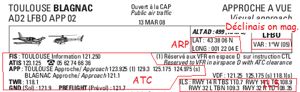

Si vous êtes sur cette page, c'est sans doute que vous voulez apprendre à créer des aéroports pour votre simulateur de vol favori, pour diverses raisons : soit vous voulez avoir dans FSX ou FS9 un aéroport qui n'existe pas dans le jeu par défaut, soit vous voulez en créer un pour faire des « expériences » (du genre vous n'arrivez pas à vous poser sur la piste donc vous en créez une de 1 km de large pour être sûr de ne pas la rater :D ), ou encore vous voulez satisfaire votre mégalomanie en ayant un aéroport à votre nom (virtuel bien sûr).
Je ne vous apprendrai que les bases. À la fin de ce tuto, vous ne pourrez donc pas :
réaliser vos propres objets en 3D (mais rassurez-vous, il y en a déjà plein dans la bibliothèque standard de FS) ;
des pistes en pente (oui, ça existe, et si vous voulez en essayer, vous pouvez en trouver sur ce site).
Mais vous pourrez faire bien des choses : mettre des pistes, des parkings, des voies de circulation, des objets 3D, un contrôle du trafic aérien, etc. !
Et aussi, une petite précision : si vous créez pour Flight Simulator X vous devez avoir la version professionnelle pour suivre ce tutoriel, si vous créez pour Flight Simulator 2004, il vous faut juste le jeu installé sur votre ordinateur ! Il n'y a qu'une seule version de FS9, donc vous êtes obligé d'avoir celle-ci.
Enfin, j'en profite pour encourager les Flight Simmeurs qui en connaissent plus que moi (et les autres aussi) dans la création, et à rédiger des tutoriels sur ce qu'ils savent à propos de ce jeu : à l'heure où je l'écris, il n'y en a aucun sur le site !
Dans ce chapitre, je vais vous montrer comment installer le SDK de FS, le logiciel ADEX.
Au fait, c'est quoi le SDK ?
SDK est l'abréviation de Software Development Kit, en français, « kit de développement de logiciel ». Il contient tout ce qu'il faut pour créer :
Des avions ;
Des missions ;
Des objets 3D ;
Des scènes.
C'est justement ces dernières que l'on va créer.
Des scènes ? Tu nous as parlé d'aéroports, pas de scènes !
En effet, j'ai oublié de vous le dire, mais un aéroport est une scène (scenery en anglais). Mais bon, ce n'est pas ça qui va vous empêcher de créer votre aéroport, si ? ;)
Là, je n'ai pas grand-chose à vous dire à part où se trouve l'installation du SDK. En effet, il y a juste à exécuter une installation automatique.
Il se trouve dans le disque 1 de FSX (et je le rappelle, seulement dans l'édition professionnelle) : il faut donc insérer le disque, et votre ordinateur va vous demander si vous voulez installer le jeu. Répondez-lui non (à moins que vous ne l'ayez pas encore fait :p ), allez dans le poste de travail (si vous êtes sous Vista), faites un clic droit sur le disque de FSX, puis cliquez sur Ouvrir (si vous double-cliquez dessus, ça va encore vous exécuter l'autorun). Ensuite, allez dans le dossier SDK, puis exécutez le « Setup.exe ».
Mais ton truc, il nous a pas mis de raccourci sur le bureau ! Et puis c'est quoi qui va nous servir, là-dedans ? On ne sait même pas ce qu'on a réellement installé !
Vu qu'on parle de ADE, on n'a qu'à le télécharger, non ?
Installation et configuration de Airport Design Editor
Téléchargement et installation du logiciel
Airport Design Editor v01.50.18
Pour le télécharger, allez sur ce site, vous pouvez trouver le lien de téléchargement dans la section Downloads. Une fois téléchargé, vous obtenez un dossier compressé. Décompressez-le . Il y a une installation automatique à l'intérieur : même si c'est en anglais, vous savez cliquer sur « Next » et « Install », non ?
FSX ou FS2004 ?
Le démarrage d'ADE peut s'effectuer de plusieurs manières:
Si vous possédez seulement Flight Simulator X: Le logiciel se démarrera sans qu'il ne se passe rien; toutefois, il faudra configurer le logiciel, nous verrons ça plus bas ;) ;
Si vous possédez seulement Flight Simulator 2004: Idem;
Si vous possédez Flight Simulator 2004 ET Flight Simulator X: Une petite fenêtre s'ouvrira avant le lancement du logiciel et vous demandera si vous créez pour FSX ou FS9, sélectionnez le simulateur choisi.
Mise à jour de ADE
Mais qu'est-ce que tu nous parles de la mise à jour ? On vient de l'installer et tu veux déjà le mettre à jour ?
Bien sûr ! En fait (du moins à l'heure où je rédige ce tutoriel), ADE est distribué dans sa version 1.50. Or, l'auteur ne met pas en téléchargement direct les mises à jour : il faut télécharger les mises à jour des différentes parties du logiciel séparément. Pour ce faire, ouvrez ADE (si c'est votre premier lancement du logiciel, une fenêtre de configuration doit apparaître, cliquez sur « Next » jusqu'à ce qu'elle se ferme, on s'occupera de la configuration plus tard, et il est possible qu'on vous demande si vous voulez créer une base de données des aéroports de base ; dans ce cas, acceptez puis attendez que cette base de données se crée), puis allez dans Help → Check for update. Dans la fenêtre, du texte apparaît, comme ceci :
Là, moi, j'ai les dernières versions installées, mais vous, normalement, vous devez avoir du texte avec plusieurs liens. Cliquez dessus pour télécharger les fichiers de mise à jour (normalement, ce sont des dossiers compressés). Une fois téléchargés, décompressez-les et copiez leur contenu dans le dossier où vous avez installé ADE (on vous demandera sûrement s'il faut remplacer d'anciens fichiers, dans ce cas, cliquez sur Copier et remplacer). Les mises à jour sont alors installées ! Dans un autre cas, le fichier que l'on vous demandera d'installer sera un exécutable dont le nom comprend « setup ». Il faut donc l'exécuter : c'est une installation automatique.
Configuration du logiciel
Maintenant que tout est prêt, on va pouvoir le configurer. Quand vous ouvrez le logiciel, une fenêtre de configuration s'ouvre et vous demande quelques informations. Normalement, vous pouvez configurer le logiciel d'ici, mais il est plus facile de vous apprendre à configurer ADE depuis le menu des réglages : comme ça, vous pourrez les modifier ensuite, alors que cette fenêtre n'apparaît qu'une seule fois. Cliquez donc plusieurs fois sur Next puis sur Finish, et allez dans Settings → Options.
Le problème, c'est qu'il n'y a pas de configuration « type » : je vais donc vous expliquer à quoi correspond chaque option, puis comment on va l'utiliser dans ce tuto. Vous pourrez ensuite les modifier suivant vos préférences.
Option
Description
Utilisation dans le tuto
Initials
Vos initiales (pas très utile; permet à ADE de nommer automatiquement vos fichiers).
Vous pouvez mettre n'importe quoi, moi, je mets souvent FSX :-°
Comment
Je ne l'ai jamais rempli, et ça a toujours fonctionné. :lol:
Laissez-le blanc (à moins que vous ne vouliez faire des tests :) ).
Display messages for
C'est le temps durant lequel les info-bulles sont affichées lorsque vous laissez la souris sur un objet.
En général, on laisse la valeur sur 2.0
Auto save every
L'intervalle de temps entre 2 sauvegardes automatiques.
Le mieux est de mettre toutes les deux minutes.
Locking disable editing
Si c'est coché, vous avez la possibilité de verrouiller des objets pour éviter de faire des bêtises dessus.
Conseillé ;)
Auto set link surfaces
C'est assez complexe. En fait, sur les aéroports, il y a des espaces goudronnés autour des parkings, mais FSX a besoin de connaître la surface (goudron, béton, …) de ces espaces lorsque vous y mettez un parking ou une voie de circulation. En cochant cette case, ADE le sélectionne tout seul.
Cochez :magicien:
Connect only to matching FS ver.
Ne sert pas à grand chose...
Cochez quand même :)
Save XML after compile
A la compilation, en plus des fichiers BGL, un ou des fichier(s) XML sont ajoutés au dossier de destination.
Cochez si vos voulez avoir des fichiers en plus :-°
Separate airport and object BGL files
Classe les fichiers BGL de l'aéroport et les fichiers BGL d'objets de l'aéroport dans des dossiers différents.
Là, vous faites comme vous voulez...
Loggin level
Sélectionne le niveau de détail des objets, mais ne change pas ce fameux niveau de détail, donc inutile :)
Laissez Normal, Ne cliquez pas sur Send log
Option
Description
Utilisation dans le tuto
FS main folder
Le dossier d'installation de FS (par exemple, chez moi, FSX est situé ici: C:\Program Files (x86)\Microsoft Games\Microsoft Flight Simulator X).
Devinez…
BglComp folder
Le dossier du Bgl Compiler, que l'on vient d'installer avec le SDK. Il est situé, si vous avez installé le SDK dans le répertoire par défaut, dans C:\Program Files (x86)\Microsoft Games\Microsoft Flight Simulator X SDK\SDK\Environment Kit\BGL Compiler SDK.
Devinez…
Shp2Vec folder
Le dossier du Terrain SDK (par défaut : C:\Program Files (x86)\Microsoft Games\Microsoft Flight Simulator X SDK\SDK\Environment Kit\Terrain SDK.
Devinez…
Option
Description
Utilisation dans le tuto
Distance
L'unité de la distance : « NM » (Nautical Miles, en français « mille marins »), « Feet » (pieds), ou « Meters » (mètres).
On ne l'utilisera pas, alors choisissez ce avec quoi vous êtes le plus à l'aise.
Dimensions
L'unité des dimensions (longueur ou largeur, par exemple) : « Feet » (pieds) ou « Meters » (mètres).
Je vais vous demander d'utiliser les pieds car c'est avec cette unité qu'on parle dans l'aéronautique (pour ceux qui ne connaissent pas, 1 m, c'est environ 3 pieds).
Parking radius
L'unité avec laquelle ADE affichera le rayon des parkings (ce n'est pas très utile : on ne s'en servira pas) : en mètres ou en pieds.
Ce que vous voulez !
Altitude
L'unité de l'altitude : en mètres ou en pieds.
Normalement, comme je vous l'ai dit un peu plus haut, on parle en pieds dans l'aéronautique. Le problème est que Google Earth utilise les mètres, et c'est grâce à lui qu'on va définir le niveau du sol. Vu que ça serait gênant d'avoir le sol au-dessus de la piste, on utilisera donc les mètres.
Coord
L'unité des coordonnées : « DDM » (format « Degrés Minutes.Décimales »), ou « Décimal » (format décimal comme 45.783254).
Choisissez ce que vous voulez... :zorro:
Les autres onglets sont configurés par défaut, ne les modifiez pas.
Voilà, ce premier chapitre est fini, et vous ne savez toujours pas faire de scène. Frustrant, non ? :diable: De toute façon, pas de panique, c'est justement le but du prochain chapitre !
Allez, dans ce chapitre, on entre dans le vif du sujet ! :)
On commence par quoi ?
Je vais d'abord vous apprendre à faire une scène basique, mais ce n'est pas le point le plus important du chapitre. En effet, je pense qu'avant d'attaquer la création de quoi que ce soit, il serait bien de savoir installer une scène, pour que vous puissiez faire des tests. Ensuite, vous saurez aplatir le terrain, et enlever l'autogen. ;)
Avant toute chose, il serait bien de savoir où placer cet aéroport. Pour en créer un virtuel, vous pouvez suivre ces quelques conseils pour choisir l'emplacement.
Un endroit plutôt plat (si le seuil de piste est en bas d'une falaise de 100 mètres de haut, on ne pourra ni décoller, ni atterrir :lol: ).
Pour l'altitude, il faut se mettre au point le plus haut de la zone (notez que vous pouvez créer votre aéroport en l'air : on pourra mettre le sol à l'altitude que l'on veut).
Il ne faut pas qu'il y ait d'objets spéciaux (du genre Tour Eiffel, Empire State Building, …), car ils ne sont pas supprimés et resteront donc dans l'aéroport.
Pour trouver ce lieu, vous pouvez utiliser la transposition (en appuyant sur Y) dans FSX : poussez le joystick pour avancer, tirez-le pour reculer, inclinez-le sur les côtés pour vous déplacer latéralement, appuyez sur F3 pour monter, F1 pour descendre et F2 pour arrêter de monter ou de descendre. Cela vous permet d'explorer rapidement une zone sans risque de s'écraser (il n'y a pas de crash dans le mode transposition).
Bon, pour mettre tout le monde d'accord, pour faire les tests, je vais vous l'imposer : on va le faire au beau milieu du Sahara (comme ça, vous ne dérangerez personne en vous crashant :lol: ), et le centre de l'aéroport (appelé ARP dans ADE) aux coordonnées N24° 17.00 W00° 10.00 à 335 mètres d'altitude.
Maintenant, ouvrez ADE, puis allez dans File → New Airport. Une fenêtre s'ouvre alors. Je vais vous demander de remplir les champs comme sur cette image :
Et ça correspond à quoi tous tes trucs, là ?
Mais oui, mais oui, on y vient :
Option
Description
Latitude
C'est la latitude (non, c'est vrai ? ) du centre de l'aéroport (ARP), au format [N (nord) ou S (sud)][degrés] [minutes].[décimales].
Longitude
C'est la longitude (c'est fou ce qu'on apprend dans ce tuto) de l'ARP, au format [E (est) ou W (ouest)][degrés] [minutes].[décimales].
Altitude
Ça (vous ne pouviez pas le deviner ;) ), c'est l'altitude de l'aéroport.
Magnetic Variation
C'est la déclinaison magnétique du lieu de l'aéroport. Il y a un chapitre en annexe dessus. Mais je vous conseille de sélectionner Auto set mag var
Airport ID
C'est le code OACI de votre aéroport. Il est unique et permet aux pilotes d'identifier plus facilement les aéroports : par exemple l'aéroport de Roissy-Charles de Gaulle a pour code LFPG (prononcer Lima Foxtrot Papa Golf). Il comporte entre 3 et 6 lettres, mais ceux des aéroports et gros aérodromes en ont 4. De plus, FSX ne permet pas d'en mettre plus de 4.
Country
Le pays où se situe l'aéroport (bon, là, je l'ai inventé, je n'ai pas regardé dans quel pays c'était vraiment, mais ça ne pose pas de problème).
State/Province
L'état dans lequel se situe l'aéroport. Vu qu'on n'est pas aux USA, on ne met rien.
City
La ville de l'aéroport.
Airport name
Le nom de l'aéroport.
Traffic scalar
Je n'y ai jamais touché…
Test Radius
C'est le rayon dans lequel tous les objets de l'aéroport doivent se trouver. Sinon, ils seront ignorés. Mettez donc une valeur assez grande.
Maintenant, l'aéroport que vous venez de créer s'ouvre. Tout d'abord, une bonne habitude à prendre : on sauvegarde ! Pour cela, allez dans File → Save airport as (c'est au format .ade), puis sélectionnez l'emplacement de votre sauvegarde. Pour ceux qui utilisent Vista (comme moi :) ), je vous conseille de le sauvegarder dans le dossier Documents : en effet, Vista est parano et a peur qu'on soit des virus voulant pénétrer dans le disque dur, donc il empêche ADE de sauvegarder n'importe quel fichier dans le dossier Programmes.
Modifions-le un peu…
Pour vous déplacer dans la fenêtre, utilisez les touches directionnelles, et pour zoomer, vous avez soit la roulette de la souris, soit les touches + et - du pavé numérique. En testant (quoi ? Vous n'avez pas testé ? Qu'est-ce que vous attendez pour le faire, bande de flemmards ? :colere2: ), vous avez dû zoomer sur le point au milieu de l'écran.
Et là, qu'est-ce que vous voyez ? Une croix au-dessus d'un cercle avec un T au milieu. Le T, c'est la tour de contrôle (attention, c'est juste l'emplacement de la vue de la tour (une des différentes vues du jeu), pas une tour en 3D). Vous pouvez essayer de la déplacer en la sélectionnant (en cliquant dessus), puis en cliquant à nouveau dessus, et en la faisant glisser en gardant le bouton de la souris enfoncé. Personnellement, je préfère la supprimer et la placer manuellement (en faisant un clic droit et en cliquant sur Add → Tower, puis en cliquant sur « OK » dans la fenêtre qui s'ouvre). Vu que je suis le prof et que vous êtes les élèves (pour une fois que c'est pas l'inverse :p ), vous allez faire comme moi. Pour supprimer un objet, vous avez deux possibilités :
soit vous sélectionnez l'objet, puis vous faites un clic droit dessus puis cliquez sur Delete Object ;
soit vous le sélectionnez et vous appuyez sur la touche Suppr (vous savez, c'est la dernière touche de Ctrl + Alt + Suppr :lol: ).
Une autre commande va vous servir : c'est pour éditer un objet. En effet, chaque objet a des caractéristiques éditables. Pour les modifier, sélectionnez l'objet, puis faites un clic droit dessus, et cliquez sur Edit Object. Vous pouvez également double-cliquer dessus.
Vous avez les coordonnées de l'emplacement de la souris en haut à gauche de l'écran.
Et la croix, c'est quoi ?
La croix, c'est le fameux ARP, le centre de l'aéroport. Vous ne pouvez pas la supprimer.
Maintenant, on a fini de créer l'aéroport en lui-même. C'est vrai qu'il est vide, mais il apparaîtra comme un aéroport dans FSX lorsqu'on l'installera.
Qu'est-ce qu'on attend pour le faire ?
Il y a un petit problème. En effet, si vous l'installez tel quel, vous verrez des trous et des bosses dans l'aéroport : il faut aplanir le terrain. De plus, il y aura des objets d'autogen (objets placés automatiquement et au hasard par FSX) en plein milieu de la scène : il faut donc les enlever. Et, ô miracle, ADE le fait (depuis la version 1.20 : avant, il fallait passer par un autre logiciel), en générant des fichiers « flatten » (aplatissage) et « exclude autogen » (exclusion de l'autogen) !
Pour aplanir et enlever l'autogen dans une zone, il faut d'abord définir cette zone par un polygone. Pour cela, il faut cliquer sur le bouton
.
Ensuite, cliquez là où vous voulez que soient les sommets du polygone (normalement, il doit entourer l'aéroport). Dans notre cas, ce polygone sera centré sur l'ARP (ce sera la seule position de départ dans FSX, vu que l'on n'a pas encore mis de piste et de parking), et relativement grand. Pour mettre le dernier sommet, double-cliquez à son emplacement : le polygone se ferme alors, et une fenêtre s'ouvre. Il y a alors trois informations à renseigner : le type de polygone, le tag du polygone et son altitude.
Les différents types de polygones sont :
Type
Description
Airport Background
Ces polygones sont ceux permettant de modifier le terrain en vue d'y mettre un aéroport.
Exclude
Ces polygones permettent d'enlever des objets. On ne va pas les utiliser, vu que la fonction permettant d'enlever l'autogen est incluse dans le type Airport Background
LandClass
Permet de changer la texture appliquée sur le sol du polygone
Pour notre cas, on va utiliser le type Airport Background. Les tags (les modifications qui vont être effectuées dans le polygone) disponibles sont composés de trois éléments. Voici à quoi ils correspondent :
tag
Description
Exclude autogen
Enlève l'autogen dans le polygone.
Flatten
Aplatit la zone du polygone à l'altitude indiquée dans le champ Altitude.
Mask Class Map
Remplace la texture appliquée dans le polygone par une texture par défaut, couleur terre.
Vu que la texture du Mask Class Map est moche (enfin, c'est qu'un point de vue, vous pouvez bien sûr essayer), on ne va pas la mettre. Par contre, on a besoin du Flatten et du Exclude autogen. Le tag qui combine tout cela est Flatten Exclude autogen : c'est donc celui-là qu'il faut sélectionner.
Enfin, dans le champ Altitude, il faut mettre l'altitude de l'aéroport (335 m), vu qu'on veut aplatir le terrain à cette altitude.
Cliquez maintenant sur « OK », et le polygone apparaît dans votre aéroport. Comme tous les objets, vous pouvez le sélectionner en cliquant dessus, et l'éditer en double-cliquant dessus ou en faisant un clic droit et en cliquant sur Edit Object.
Un Landclass
Le landclass n'est pas obligatoire, mais ça fait plus classe. :soleil: Pour en mettre, il faut redéfinir un polygone sur la zone où on veut changer la texture. Ensuite, dans le type de polygone, il faudra choisir Landclass, et comme tag, il faut choisir le nom de la texture. Pour notre aéroport, vous n'avez qu'à choisir Airfield1 : c'est de l'herbe (bon, je sais, on est en plein désert, mais vu que ce n'est que de la simulation, on peut tout se permettre). Enfin, dans l'altitude, mettez l'altitude de l'aéroport, et cliquez sur « OK ». Vu qu'on a fini les modifications dans notre aéroport, sauvegardez.
Compilons !
On a créé notre aéroport, c'est bien beau. Mais FSX ne peut pas le lire tel quel ! Il faut donc le compiler (comme en programmation). Pour cela, rien de plus simple : cliquez sur File → Compile Airport. Là, il faut choisir un dossier où l'aéroport sera compilé, au format .bgl. Pour que FSX puisse le lire, il faut créer un dossier (celui de la scène) comprenant un sous-dossier nommé « scenery » (pour ceux qui ont Vista, le mieux est le dossier Documents, vu que Vista ne veut pas qu'un logiciel enregistre quoi que ce soit dans le dossier Programmes). C'est dans ce dossier scenery qu'il faut compiler. Deux fichiers .bgl sont alors créés : un avec les informations sur l'aéroport, et un avec les informations de terrain (flatten, exclude autogen, et landclass).
Désormais, je ne vous dirai plus de compiler : vous le ferez comme des grands ( :p ) lorsque vous voudrez installer l'aéroport dans FSX ! De plus, il faudra refaire des polygones de flatten, exclude autogenn et landclass quand vous modifierez l'aéroport, pour qu'ils « collent » au plus près de l'aéroport.
Les polygones ne gêneront-ils pas lorsqu'on modifiera l'aéroport ?
Si, bien sûr ! Pour éviter cela, il faut cliquer dans la barre des menus sur View, et décocher Airport Backgrounds et Land Class : les polygones disparaîtront. Pour les voir, il faudra cocher ces mêmes cases.
Importer notre aéroport dans le jeu revient à l'installer. Donc, si vous avez déjà installé des scènes que vous avez téléchargées sur Internet, ça sera plus facile pour vous (et dans le cas contraire, ce ne sera pas très difficile non plus :p ) !
Tout d'abord, vérifiez bien que le dossier racine de votre aéroport contient bien un dossier scenery, qui contient lui-même deux fichiers .bgl. Maintenant que cela est fait, copiez / collez (et non pas coupez / collez, surtout si vous êtes sous Vista : travailler dans le dossier Documents est bien plus pratique) ce dossier racine à un emplacement définitif (j'ai l'habitude de le mettre dans [racine de FSX]/Addon Scenery, donc si vous voulez avoir la même chose que moi, vous savez ce qu'il vous reste à faire…). La prochaine fois que vous réinstallerez la scène, pour voir les changements qui ne tarderont pas à arriver avec le chapitre 3, il faudra supprimer l'ancien dossier avant de coller le nouveau.
Ensuite, il faut dire à FSX qu'on a installé la scène dans ce répertoire. Pour cela, ouvrez le jeu, et allez dans Paramètres. Là, sur la droite de la fenêtre, cliquez sur le bouton Bibliothèque de décors. Une nouvelle fenêtre s'ouvre alors. Elle recense toutes les scènes que le jeu doit charger.
Eh, mais, il y en a une tonne alors que j'ai jamais rien installé ! Qui m'a mis tout ça sur mon ordinateur sans que je l'y autorise, que je l'étripe ! :colere:
Eh bien alors, étripez-vous ! :p En fait, toutes ces scènes sont des scènes par défaut, qui sont donc installées avec le jeu, que vous avez vous-même installé.
C'est le moment que je vous explique comment ça marche.
La bibliothèque de décors
Toutes ces scènes sont des dossiers contenant eux-mêmes un dossier scenery, contenant… des fichiers .bgl. Ça ne vous rappelle rien, ça ? ^^ Vous pouvez les trouver dans le dossier [racine de FSX]/scenery, mais ça n'a pas grande importance (sauf si vous voulez les supprimer, histoire de voir ce que ça fait :-° ). Ce qui nous intéresse plus est le système des priorités.
Ce système fait que FSX charge toutes les scènes, que ce soit celles par défaut ou celle que vous avez installées. Si plusieurs scènes recouvrent le même endroit, c'est celle qui a la priorité la plus faible qui est affichée (par exemple, si deux scènes de priorité 5 et 17 recouvrent la même zone, le jeu affichera celle de priorité 5). Dans la liste des scènes, celles de plus faible priorité sont en haut, et celles de plus grande en bas.
Vu qu'on veut que notre scène soit affichée (car elle va forcément être sur la même zone qu'une scène par défaut), il faut donc lui donner la priorité la plus forte (1, et toutes les priorités vont être décalées). De toute façon, cela est fait automatiquement par FSX.
Bon, maintenant que tu as fini ton bla-bla, tu nous expliques comment on fait pour l'ajouter ?
Pour ajouter une scène, cliquez sur le bouton Ajouter une zone. Une fenêtre s'ouvre, et il faut lui indiquer le répertoire racine de notre scène.
Votre scène est maintenant ajoutée ! Je vais quand même vous expliquer à quoi servent les autres boutons :
Bouton
Description
Monter
Diminue la priorité de la scène sélectionnée (la monte dans la liste).
Descendre
Augmente la priorité de la scène sélectionnée (la descend dans la liste).
Modifier une zone
Permet de changer l'adresse de la racine de la scène sélectionnée.
Supprimer une zone
Supprime la zone sélectionnée.
Vous pouvez donc cliquer sur « OK ». Vous allez avoir un petit chargement, et vous pouvez tester la scène ! Allez dans le mode Vol libre, choisissez un avion, puis pour choisir l'aéroport de départ, vous avez plusieurs manières (comme d'ailleurs pour sélectionner tout autre aéroport) :
en entrant le nom de l'aéroport, ou son code OACI dans la zone prévue à cet effet ;
en choisissant son pays puis sa ville dans les filtres.
Ensuite, choisissez la météo, l'heure, et la saison, et c'est parti !
Tout ça pour ça ?
C'est vrai que c'est vide, mais dans la prochaine partie, on apprendra à faire des pistes, des parkings, et des voies de circulation. Et le mieux dans tout ça, c'est que ce n'est pas excessivement compliqué (peut-être juste un peu long) !
Maintenant que vous savez créer des scènes de base, vous avez deux solutions :
Vous vous lancez tout seul dans ADE et essayez de découvrir toutes ses fonctionnalités (je vous souhaite bonne chance, surtout si vous êtes un peu just en anglais) ;
Vous voulez de l'aide pour continuer :) .
Si vous avez choisi la deuxième solution, alors rendez-vous au prochain chapitre ! :pirate:
On va quand même commencer par ce à quoi sert un aéroport : faire atterrir et décoller des avions. Pour cela, il faut donc des pistes (runway en anglais).
Placer une piste
Pour pouvoir placer n'importe quel objet, il faut bien sûr avoir créé un aéroport. Pour ce tuto, le plus simple est de prendre celui que l'on a créé au chapitre précédent. Donc si ce n'est pas déjà fait, ouvrez-le (File → Open airport, puis sélectionnez la sauvegarde que vous avez faite).
Ensuite, choisissez l'endroit où vous voulez placer la piste, et faites un clic droit dessus, et cliquez sur Add → Runway. Une fenêtre apparaît, et là, les hostilités commencent…
L'onglet « Runway »
C'est dans cet onglet que l'on va entrer les caractéristiques principales de la piste.
Là, on va (très logiquement :lol: ) commencer par le bas. En fait, les paramètres les plus importants à renseigner sont :
l'orientation de la piste ;
sa longueur ;
sa largeur ;
le type de surface (béton, asphalte, herbe…).
Choisissons une orientation…
On va donc commencer par l'orientation géographique (et non pas magnétique, pour plus d'informations, voir le chapitre sur la déclinaison magnétique en annexe) de la piste. Pour ce tuto, je vais vous l'imposer, mais vous pouvez bien sûr (et c'est même fortement conseillé) faire des essais, soit sur cet aéroport, soit sur un autre. Donc, pour cette orientation, on va choisir 34°/214° (si vous êtes surpris par le fait qu'il y a deux orientations pour une même piste, je vous rappelle que sur une piste, on peut se poser et décoller dans un sens, mais aussi dans l'autre, ce qui nous fait deux pistes. Pour connaître l'orientation de la piste opposée, il faut ajouter ou retrancher 180° à l'orientation de la piste, de façon à obtenir une orientation comprise entre 0° et 360°).
Il faut donc remplir le champ Heading en indiquant soit 34°, soit 214°. La piste dont l'orientation est celle indiquée ici est appelée dans ce logiciel Primary, et celle d'orientation opposée est nommée Secondary. Pour qu'on ait tous les mêmes Primary et Secondary, je vais vous demander de remplir le champ par 34.
La longueur et la largeur…
Ensuite, il faut indiquer la longueur de la piste. Pour que tous les avions arrivent largement à s'y poser, on va mettre 10 000 pieds (c'est la longueur moyenne-élevée d'une piste d'un grand aéroport international). Le champ à remplir est Length. Je ne vous en dis pas plus, car il n'y a rien d'autre à dire. ;)
De même, il faut indiquer la largeur dans Width. On va mettre 250 pieds, ce qui est suffisant pour ne pas louper la piste.
La surface…
Enfin, dans Surface, il faut sélectionner le type de surface de la piste. C'est en anglais, et voici la traduction des principaux types de surface :
Asphalt : asphalte ;
Concrete : béton ;
Grass : herbe ;
Ice : glace ;
Sand : sable ;
Tarmac : tarmac (oui, je sais, là, il fallait être fort pour deviner :lol: ) ;
Water : eau ;
Gravel : gravier.
Dans notre cas, on va utiliser Asphalt (pour la traduction, je vous laisse deviner… :D ).
Donnons-leur un nom…
Maintenant, on va nommer nos deux pistes (je rappelle, une pour chaque côté). Pour nommer une piste, on prend son orientation géographique que l'on divise par 10, et on enlève les chiffres après la virgule. Ensuite, si deux pistes se retrouvent avec le même nom, on ajoute R (pour Right, « droite » en anglais) au nom de la piste de droite, L (pour Left, « gauche » en anglais) à celle de gauche, et s'il y a une troisième piste, C (pour Center, « centre » en anglais) à celle du milieu. Dans notre cas, la Primary s'appellera donc 3 et la Secondary21.
Pour l'indiquer à ADE, c'est en haut de la fenêtre, à Number. Il faut choisir dans la liste déroulante R[numéro de la Primary], donc ici, R03. Comme vous pouvez le remarquer, le numéro de la Secondary est sélectionné automatiquement. Ensuite, dans Designator, on choisit la lettre (R, L, ou C) en sélectionnant cette lettre. Vu qu'il n'y en a pas dans notre cas, on choisit None. Là aussi, celui de la Secondary est sélectionné automatiquement.
C'est pour cela qu'on va aller aux autres onglets !
L'onglet « Pattern »
Pattern signifie en anglais « circuit d'aéroport ». C'est un circuit utilisé pour l'approche en vol à vue : il y en a un pour chaque piste, et le pilote doit en gros tourner autour de la piste. Pour plus d'informations, il y a un très bon tutoriel dessus ici.
Il faut donc remplir les informations pour chaque piste. Pour Takeoff (« décollage » en anglais), il faut indiquer si on peut décoller de la piste : Yes pour oui, No pour non. De même pour Landing (« atterrissage » en anglais), où il faut dire à ADE si on peut atterrir sur la piste. Ensuite, à Pattern, il faut indiquer dans quel sens on tourne dans le circuit : soit à gauche (Left), soit à droite (Right). Enfin, à Pattern Altitude, on choisit l'altitude du circuit (à quelle altitude les pilotes doivent rester quand ils sont dans le circuit).
Et on met quoi à tous ces champs ?
Vous mettez ce que vous voulez ! En fait, cela a surtout un impact sur le trafic AI (trafic géré par FSX), et je ne vais pas vous apprendre dans ce tuto à en mettre (je n'ai pas dit que je ne vous l'apprendrai jamais, mais si un autre Zéro fait un tuto dessus, je ne lui dirai pas qu'il m'a volé mon idée… ;) ).
L'onglet « Markings »
C'est dans cet onglet que l'on indique les marquages sur les pistes. Il y en a tellement que l'on peut s'y perdre, mais je vous ai fait un tableau des options possibles :
Nom du marquage
Description
Edge Lines
Met des lignes sur les bords de la piste.
Threshold stripes
Met des bandes aux extrémités de la piste.
Touchdown
Met des bandes indiquant la zone du toucher de roues à l'atterrissage.
Center line
Met une ligne au centre de la piste.
Ident
Écrit le nom de la piste à son début.
Precision
Fait que la ligne du centre de la piste est peinte sur la longueur de toute la piste, alors que normalement, elle s'arrête vers la zone de toucher de roues, et que les lumières du bord de la piste soient jaunes sur les derniers 2000 pieds de chaque côté. Rajoute également 3 bandes après le point du toucher de roues.
Edge pavement
Fait qu'il y ait un peu d'asphalte après la ligne du bord.
Primary/Secondary closed
Met une croix au début de la Primary / Secondary pour indiquer que la piste est fermée.
Primary/Secondary STOL
Écrit STOL (Short Take Off and Landing, « atterrissage et décollage court » en anglais) au début de la Primary / Secondary, pour indiquer que la piste est courte et est réservée aux appareils à décollage et atterrissage court.
Fixed Distance
Met une marque à l'endroit que le pilote doit viser à l'atterrissage (de façon à passer le seuil de piste à 50 pieds).
Leading Zero Ident
Si le numéro de la piste est compris entre 1 et 9, au nom de la piste écrit au début de celle-ci, il sera rajouté un zéro devant (exemple : pour la piste 4R, il sera écrit 04R).
Single End
Si cette option est cochée, il n'y aura pas de marquage à la fin de la Secondary. C'est utile pour les aérodromes au pied d'une montagne, où on ne peut atterrir que dans un sens.
No Treshold End Arrows
Enlève les flèches de fin des Offset Tresholds (voir un peu après dans ce tutoriel).
Alternate Treshold
Le numéro de la piste est écrit au même endroit que les Treshold Stripes si la case est cochée.
Alternate Touchdown
Je n'ai jamais vu de différence entre quand la case est cochée et quand elle ne l'est pas ! :honte:
Alternate Fixed Distance
Change la forme du marquage Fixed Distance : 3 rectangles décalés qui se touchent par les coins, façon damier au lieu d'une bande.
Alternate Precision
Ne met plus que 2 bandes au marquage Precision et elles sont plus petites.
On va donc cocher les cases :
Leading Zero Ident ;
Edge Lines ;
Treshold Stripes ;
Touchdown ;
Center Line ;
Ident ;
Precision ;
Fixed distance ;
Edge Pavement.
L'onglet « Lights »
Les options du milieu de la fenêtre sont celles permettant de mettre des lumières sur la piste, celles d'en haut de mettre des lumières d'approche de la Secondary, et celles d'en bas de mettre des lumières d'approche de la Primary. Je vais donc vous expliquer toutes les options de lumières d'approche pour la Primary, c'est la même chose pour la Secondary.
Les lumières d'approche
Tout d'abord, pour mettre des lumières d'approche pour la Primary, il faut cocher la case Primary Approach Lights (pour la Secondary, c'est Secondary Approach Lights). Des options deviennent alors disponibles. À droite, il y a trois cases. Ce tableau montre à quoi elles correspondent :
Nom de la case
Description
End Lights
Met des lumières vertes délimitant la fin de la piste.
REIL
Met deux lumières blanches de part et d'autre du seuil de piste.
Touchdown
Met des lumières blanches dans la zone du marquage Touchdown, pour le remplacer la nuit.
Comme options possibles, il y a aussi au centre de la fenêtre le système de lumières d'approche. Ces systèmes sont des lumières prolongeant la piste et permettant au pilote d'être bien dans l'axe. Dans la liste déroulante, on choisit le système, et en dessous, on choisit le nombre de lumières. Voici les différents systèmes, avec chacun 10 lumières :
De gauche à droite :
ODALS ;
MALSF ;
MALSR ;
SSALF ;
SSALR ;
ALSF1 ;
ALSF2 ;
RAIL ;
CALVERT ;
CALVERT2 ;
MALS ;
SALS ;
SSALS.
Pour notre exemple, vous pouvez cocher les trois cases, et mettre le système ODALS avec 10 lumières.
Les lumières s'étendant sur toute la piste
On peut les définir au milieu de la fenêtre. Tout d'abord, il y a deux listes déroulantes. Dans la liste Edge Lights, on sélectionne une option pour les lumières du bord de la piste, et dans Center Lights, une pour celles du centre de la piste.
Les options possibles sont :
None : pas de lumière ;
Low : des lumières d'intensité faible ;
Medium : des lumières d'intensité moyenne ;
High : des lumières d'intensité forte ;
Ensuite, il y a une case : Center Red. Elle fait qu'à chaque extrémité de la piste, les lumières du centre de la piste sont rouges et blanches, puis entièrement rouges en bout de piste.
On va donc mettre toutes les lumières en intensité maximale, et cocher la case. Après tout, on est dans le désert, qui pourrait-on gêner avec notre éclairage ? :)
Les Blastpads, Overruns et Offset Tresholds
Tu nous fais peur, là, avec ces noms ! o_O
Rassurez-vous, ça ne mord pas ! :D De toute façon, si vous êtes encore en vie ici, vous survivrez jusqu'à la fin du chapitre (attention peut-être aux PAPI/VASI, mais sinon ça devrait aller). :p
Toutes ces options se trouvent dans les onglets Primary (pour la Primary) et Secondary (pour la Secondary).
Les Blastpads / Overruns
Pour en mettre un, il faut cocher la case du même nom.
Au fait, tu veux nous en faire mettre, mais tu ne nous as pas expliqué ce que c'était !
Donc, pour en mettre un, il faut ensuite cocher une autre case : Blastpad ou Overrun, suivant ce qu'on veut mettre. Enfin, il faut indiquer sa longueur. Cette longueur n'empiétera pas sur la piste, mais y sera ajoutée.
Les Offset Tresholds
S'il y a un Offset Treshold sur la piste, la zone de décollage et la zone d'atterrissage seront décalées : le décollage se fera avant l'atterrissage. Pour montrer cela, un marquage sera ajouté au début de la piste sur une certaine longueur : le seuil de piste pour l'atterrissage est la fin de ce marquage. Vu qu'il vaut mieux un dessin qu'un long discours, je vous ai fait un petit schéma :
C'est utile s'il y a un obstacle près du seuil de piste : pour décoller, les pilotes disposent de la longueur de toute la piste, et pour atterrir, ils évitent les obstacles.
Pour notre exemple, ajoutez donc à chaque piste un Blastpad de 500 pieds.
Les PAPI / VASI
Avant que vous ne me posiez la question, je vais vous dire ce qu'est un PAPI / VASI. En fait, c'est un dispositif permettant au pilote de savoir s'il est au-dessus de la pente d'approche ou au-dessous. Il en existe plusieurs types (les deux systèmes les plus répandus sont justement les PAPI et les VASI), mais dans le cas général, ils sont constitués de plusieurs lumières qui sont rouges si vous êtes au-dessus d'une certaine pente d'approche, et blanches si vous êtes en dessous. Ils sont faits pour que lorsque vous êtes sur la bonne pente, la moitié des lumières soient blanche et l'autre moitié rouge, qu'il y en ait plus de rouges que de blanches si vous êtes en dessous et inversement.
Voici ce que ça donne dans FSX :
Lorsqu'on est trop haut, cela donne :
Et si l'avion est trop bas, on a :
Pour en rajouter un, il faut aller dans l'onglet Primary ou Secondary, suivant à quel endroit vous voulez le mettre. Ensuite, cochez la case Left Vasi ou Right Vasi (ou les deux, si vous voulez faire quelque chose d'unique !), suivant si vous voulez le mettre à droite (right) ou à gauche (left). Dans la plupart des cas, il est à gauche, car le pilote est assis à gauche dans un avion. Après cela, il faut choisir le type de PAPI / VASI. Voici une description de tous les types existants :
Nom du dispositif
Description
VASIxy, avec x et y des nombres.
Ce sont des rangées de lumières. Le nombre x est le nombre de rangées, et y est le nombre de lumières par rangée. Le plus répandu est le VASI22 (2 rangées de 2 lumières). Pour le VASI33, la dernière rangée ne comporte que 2 lumières.
PAPIx, avec x un nombre.
C'est une rangée de x lumières. C'est avec les VASI les dispositifs les plus utilisés.
TRICOLOR
C'est une lumière qui change de couleur suivant où on se trouve sur la pente de descente idéale : blanche au-dessus, jaune-orange si on la suit, et rouge au-dessous.
PVASI
Le « P » signifie Pulsating : si on est beaucoup trop haut ou trop bas, la lumière composant ce VASI clignote et est de couleur rouge ou blanche suivant le cas, si on est légèrement trop haut ou trop bas, elle ne clignote plus et est de couleur rouge ou blanche.
TVASI
C'est un VASI avec une rangée de 4 lumières, puis 3 rangées de 1 lumière.
BALL
Dans FSX, c'est la même chose qu'un PVASI.
APAP
Apparemment, c'est la même chose qu'un PAPI2.
Maintenant, il faut remplir les champs en dessous, et c'est là que les choses se corsent. Tout d'abord, il faut indiquer dans le champ BiasX le décalage du PAPI / VASI par rapport au centre de la piste dans le sens de la largeur. Généralement, on le met à 20 pieds du bord de la piste. La piste ayant une largeur de 250 pieds, le bord est donc décalé de 250/2 = 125 pieds. À cela, on rajoute 20 pieds, ce qui donne 145 pieds. La formule générale est donc :
BiasX = \frac{Width}{2} + 20
Avant de remplir le prochain champ, il faut remplir le champ Pitch. C'est l'angle de la pente optimale d'approche (qui a dit « c'est une marque de beignets » ? ;) ). En général, elle est de 3°.
Ensuite, c'est la même chose pour le champ BiasZ, sauf que cette fois-ci, c'est le décalage dans le sens de la longueur qu'on nous demande. Dans notre cas, la piste mesure 10 000 pieds. Le bout de piste est donc à 5000 pieds, distance à laquelle on enlève la longueur d'un éventuel Offset Treshold : je vous rappelle que pour l'atterrissage, on ne le compte pas. Dans notre cas, on reste à 5000 pieds. Mais c'est là que nous avons un problème. En effet, on n'atterrit pas sur le seuil de piste, mais il faut le passer à 50 pieds d'altitude, il faut donc enlever une certaine distance d à nos 5000 pieds. On obtient donc un petit exo de trigonométrie qu'un élève de 4e ou de 3e (je me rappelle plus en quelle classe je l'ai fait :) ) est censé pouvoir résoudre :
Avec a l'angle d'approche, S le seuil de piste, T le point de toucher de roues et H la position de l'avion quand il franchit le seuil de piste. C'est bon, vous avez trouvé d ? ^^ Comment ça, non ?! :colere2: Bon, je vais vous donner la réponse, de toute façon on n'est pas en cours de maths :
an a = \frac{SH}{d} \Rightarrow d = \frac{SH}{ an a} Dans notre cas, cela donne : d = \frac{50}{ an 3} \simeq 954,06
On arrondit cette réponse à 1000 pieds, que l'on retranche donc de 5000, ce qui nous donne 4000 pieds au champ BiasZ.
La formule générale est :
BiasZ = Length - \frac{SH}{ an a}
Enfin, il faut remplir le champ Spacing. C'est l'espacement entre 2 rangées de lumières dans un VASI. La valeur « normale » est de 300 pieds. Vous pouvez utiliser par exemple la calculatrice Windows pour effectuer ces calculs.
Pour ce tuto, vous pouvez mettre un PAPI4 à gauche de chaque côté de la piste.
Vous pouvez maintenant cliquer sur « OK », vous avez entré toutes les informations qu'il fallait !
Super ! Bon, maintenant, on passe à quoi ?
Mais qu'est-ce qui ne va pas ? J'ai pourtant tout bien fait ce que tu m'as dit !
Pour le savoir, lisez la suite !
Je ne vous impose pas d'emplacement pour cette piste, mais on va mettre tous les autres objets en position relative par rapport à elle.
Une situation de départ
Quand vous sélectionnez un aéroport en mode Vol Libre dans FSX, et que vous choisissez de commencer sur une piste, le jeu va regarder dans le fichier .bgl l'endroit où il faut mettre l'avion. En effet, pour chaque piste, il y a une situation de départ où FSX va vous mettre. Elle peut être n'importe où, mais vu que le jeu est bien fait, les développeurs ont eu la bonne idée de la mettre sur la piste. Il faut donc que vous la définissiez pour votre piste.
Pour cela, faites un clic droit à n'importe quel endroit (dans la fenêtre de ADE, quand même…), mettez la souris sur Add et cliquez sur Runway Start. Une petite fenêtre s'ouvre alors, choisissez la piste à laquelle vous voulez ajouter une situation de départ, et cliquez sur Add Start. Elle est mise automatiquement en bout de piste, et bien orientée. Vous pouvez bien sûr la déplacer en la faisant glisser, et changer son orientation en bougeant le petit cercle jaune et noir sur le côté de la situation de départ.
Tant qu'on est aux petites choses à rajouter, sachez que la piste est aussi une voie de circulation que les pilotes peuvent être amenés à emprunter pour se rendre à un endroit ou à un autre. Vu que FSX n'est pas très malin, ce n'est pas une voie de circulation par défaut. Il faut donc lui rajouter cela avec un type de Taxiway : le type Runway. Pour en rajouter un, il faut cliquer sur le bouton
. Ensuite, cliquez sur une des extrémités de la piste et en gardant le clic de la souris enfoncé, allez à l'autre extrémité (vous pouvez vous déplacer sur l'aéroport avec les flèches directionnelles même en gardant le clic de la souris enfoncé). C'est tout !
Dans FS, un parking est juste un emplacement au sol et un emplacement de départ, mais il ne comprend pas de surface. Donc, si vous mettez un parking tout seul, vous vous retrouverez… sur l'herbe lorsque vous irez à cet emplacement dans le jeu. Il faut donc mettre une surface.
Mettre une surface
Pour mettre une surface, il faut cliquer sur le bouton en forme de rectangle et, à droite de ce bouton, choisir dans une liste déroulante le type de surface que vous voulez mettre. Dans notre exemple, on va prendre Asphalt comme type de surface, et on va le mettre environ à cet emplacement :
Pour cela, cliquez avec la souris successivement à l'emplacement des sommets de la surface de façon à former un polygone, et pour finir, cliquez sur le point de départ. Vous venez de finir de tracer une surface !
Il est aussi possible de mettre des lumières autour de cette surface : c'est le bouton
. Ensuite, vous pouvez ajouter ces lignes de lumière en cliquant à l'endroit des extrémités des lignes de lumières que vous voulez mettre, et il faut double-cliquer pour arrêter de tracer ces lignes.
Des parkings
On va mettre des rangées de parkings sur le côté ouest (à gauche) de notre surface. À la fin, on devrait avoir des parkings comme ceci :
Pour en mettre, il faut cliquer sur le bouton
, et choisir dans la liste déroulant à sa droite (j'ai un peu l'impression de me répéter, là :-° ), le type de parking. Voici la description de chacun :
Nom du parking
Description
RAMP_GA
Parking pour l'aviation de tourisme.
RAMP_GA_SMALL/MEDIUM/LARGE
Parking pour l'aviation de tourisme, de taille petite / moyenne / grande.
RAMP_CARGO
Parking pour le transport de marchandises.
RAMP_MIL_CARGO
Parking réservé aux transports militaires.
RAMP_MIL_COMBAT
Parking pour les avions de chasse.
GATE_SMALL/MEDIUM/HEAVY
Parking pour l'aviation commerciale de taille petite / moyenne / grande.
DOCK_GA
Un autre parking pour l'aviation de tourisme.
FUEL
Parking pour les véhicules amenant le carburant aux avions.
VEHICLE
Parking pour les autres véhicules.
On va mettre 3 GATE_HEAVY, 3 GATE_MEDIUM, et 3 GATE_SMALL.
Pour placer un parking, il faut cliquer à son emplacement. Commencez donc par mettre un HEAVY vers le nord (ce n'est pas grave s'il est mal placé, on pourra le bouger ensuite), et ensuite, double-cliquez dessus pour modifier ses caractéristiques. Une fenêtre s'ouvre. On peut alors modifier quelques caractéristiques :
Nom de la caractéristique
Description
Name
C'est le nom du groupe de parkings, par exemple : pour le terminal A, ce sera GATE_A. Pour notre exemple, on va mettre GATE_A.
Number
C'est le numéro du parking. Il est automatiquement incrémenté lorsque vous en placez un autre. Laissez donc 1.
Type
C'est le type de parking (celui qu'on vient de choisir, alors n'y touchez pas !).
Radius
Le rayon du parking. Il varie en fonction du type de parking. Laissez la valeur par défaut.
Tee Offsets
Permet de mettre plusieurs emplacements de parking dans un seul parking, plus ou moins avancé : T1, T2, T3, et T4 sont ces emplacements et le champ leur correspondant correspond au décalage, en pieds, par rapport au parking normal. Si il est positif, le décalage est en avant, et s'il est négatif, il est en arrière.
Airlines
C'est le champ Codes qui est important. Il faut le remplir avec les codes des compagnies aériennes auxquelles le parking est réservé. Il peut y en avoir plusieurs. Pour trouver le code, il faut aller dans les deux listes déroulantes au-dessus : dans la première, il y a la liste de toutes les compagnies, et dans la seconde, uniquement celles que vous avez déjà sélectionnées. Dans les deux cas, il faut sélectionner la compagnie, et cliquer sur le « + » à côté. Pour notre exemple, ne mettez rien.
Heading
C'est l'orientation géographique du parking. On peut la modifier ici, mais c'est plus pratique de le faire dans la fenêtre principale de ADE.
Faites la même chose pour les 2 GATE_HEAVY restants, puis pour les 3 MEDIUM et les 3 SMALL. Ensuite, vous pouvez ajuster leur position en les faisant glisser, et leur orientation en glissant le petit cercle jaune et noir à côté du parking qui apparaît quand on le sélectionne.
Pour notre aéroport, on va mettre simplement 3 voies de circulation : une longeant la piste appelée « A », et connectée à la piste en 4 points, une voie « B » reliant les deux extrémités de la piste en passant par les parkings, et une voie « C » reliant le milieu de la voie « B » aux parkings. Ces voies seront également scindées en plusieurs parties (A1, A2, A3, …), comme le montre cette image :
Ajouter des Taxiways
Pour créer une voie de circulation, il faut cliquer sur le bouton
, et dans la liste déroulante située à droite de la série de boutons dont celui-ci en fait partie, sélectionner le type de surface. On va rester dans l'asphalte pour SDZ Intl (le nom de l'aéroport pour ceux qui n'auraient pas suivi). Ensuite, créez la voie A1 en cliquant sur un point appartenant à la voie de circulation de type Runway et en faisant glisser jusqu'à l'extrémité de A1. Ensuite, double-cliquez sur cette voie de circulation. Une fenêtre s'ouvre, et les options dont on a besoin maintenant sont celles à partir de Width. Cette dernière est la largeur de la voie. Mettez 100 pieds.
Dans Left Edge et Right Edge, on détermine les caractéristiques du côté gauche et droit de la voie. Dans la liste déroulante, on choisit le type de ligne qu'il y a sur ce côté : Solid (ligne continue), Dashed (ligne discontinue), ou None (aucune). Choisissez Solid pour les deux côtés. La case Lights, si elle est cochée, fait qu'il y a des lumières sur ce côté. Cochez cette case.
Dans Center, on choisit cette fois les caractéristiques du centre de la voie. La case Line, si elle est cochée, met une ligne continue, et la case Lights met des lumières. Cochez les deux cases.
Ce qu'il faut savoir, c'est que quand on créera d'autres voies de circulation, elles reprendront les caractéristiques de la voie à partir de laquelle on a fait glisser la souris. Sinon, il faut se retaper ça.
Ensuite, il faut donc créer toutes les autres voies comme sur mon schéma (on ne leur donne pas de nom pour l'instant), en faisant donc glisser la souris à partir d'une voie existante. Si vous trouvez que ça fait « carré », c'est parfaitement normal : en effet, si vous remarquez bien, chaque tronçon de voie correspond à une voie de nom différent. Cela sert à ne pas avoir à réécrire plusieurs fois le même nom quand on les nommera, mais ensuite, on rajoutera des arrondis, bien sûr !
C'est bon, vous avez mis toutes les voies ? Maintenant, on va apprendre à les nommer.
Donner un nom aux taxiways
À droite des boutons permettant de créer des taxiways, il y a une liste déroulante. C'est elle qui contient le nom de toutes les voies de circulation. Or, si vous regardez, il y en a une : « Blank ». En fait, c'est le nom par défaut de ces voies. Pour ajouter les nôtres, il faut cliquer sur le bouton « + » à sa droite. Une fenêtre s'ouvre vous demandant le nom de la taxiway. Renseignez le champ avec « A1 », puis cliquez sur Add. Vous pouvez alors remarquer que ce nom a été ajouté à la liste. Faites de même avec les autres noms (A2, A3, A4, A5, A6, A7, A8, B1, B2, C). Oui, je sais, c'est chiant embêtant, mais vous n'avez pas encore vu la suite !
En effet, il va maintenant falloir attribuer ces noms aux taxiways. Pour cela, il faut double-cliquer sur la voie, et dans Designator, il faut choisir le nom de la voie. Je vous laisse faire ça pour toutes les voies (quand je vous avais dit que c'était encore plus fastidieux ! Et encore, là, on n'a que 11 noms à attribuer, mais dans des gros aéroports, cela peut atteindre la cinquantaine, voire la centaine :waw: ).
Rajoutons des nodes
Un node est un nœud. Ces nœuds sont les petits points bleus qui sont aux extrémités des voies que nous avons créées. Ces nœuds peuvent tous se déplacer, et on peut en rajouter sur les voies pour pouvoir faire des courbes. C'est cela que nous allons utiliser. Pour en rajouter, il faut cliquer sur le bouton
, et il faut cliquer à l'endroit où vous voulez rajouter le nœud (vous pouvez également en rajouter en dehors des taxiways, mais ça ne sert à rien). Pour faire un test, vous pouvez en rajouter trois sur la voie B1 (attention, il faut les rajouter exactement sur la ligne du centre de la voie, si vous vous êtes trompé, vous pouvez utiliser la fonction annuler en appuyant sur Ctrl + Z, et la fonction rétablir avec Ctrl + Y). Ensuite, pour les déplacer, il faut cliquer sur le bouton
, et faire cliquer / glisser la souris après avoir sélectionné le nœud. Déplacez les trois nœuds de façon à faire que la partie de la voie B1 située sur la surface des parkings soit parallèle à ceux-ci, et de faire un petit arrondi de cette manière :
Faites de même pour la voie B2.
Des nœuds spéciaux : les hold short
Les quoi ?
En fait, il y en a deux types : les hold short nodes (que l'on ajoute via le bouton
) et les ILS hold short nodes (que l'on ajoute via le bouton
). Les premiers sont les points d'arrêt des pistes (là où le pilote doit attendre avant d'avoir l'autorisation de s'aligner et de décoller), et les seconds le point après lequel le pilote après avoir quitté la piste et en attendant les ordres de l'ATC). Ils doivent chacun être à moins de 225 pieds du bord de la piste. Lorsque vous les créez, vous pouvez activer la visualisation de cette limite en cliquant sur View → Hold short nodes limits. Vous pouvez les déplacer comme des nœuds.
Mettez-en donc à toutes les taxiways qui sont reliées à la piste.
Relier les parkings aux taxiways
Mais c'est vrai ! On ne les a pas reliés !
C'est exactement ce qu'on va faire (enfin, on pouvait le deviner en lisant le titre ;) ).
Pour cela, on utilise un type de voie spécial(e), l'Apron Link, que l'on ajoute avec le bouton
. Pour en mettre, il faut donc cliquer sur ce bouton, puis cliquer sur le parking et faire glisser jusqu'à la taxiway. Faites cela pour tous les parkings. Ensuite, on peut éditer leurs caractéristiques en double-cliquant dessus. Ce sont quasiment les mêmes caractéristiques que les taxiways. Généralement, on ne leur donne pas de désignation, et on met une ligne et des lumières au centre. C'est donc ce que vous pouvez faire, pour toutes (là aussi, c'est long :( ).
Voilà, c'est tout pour les voies de circulation !
Au fait, dans le chapitre précédent, tu nous avais dit que tu allais nous donner un truc pour créer un fichier .kml avec Google Earth. Tu nous le dis ?
Oui, en fait, le truc, c'est de créer le polygone entourant l'aéroport avec des voies de circulation (on s'en fiche de ses caractéristiques !). Ensuite, pour créer les points avec Google Earth (ceux dont on entre les coordonnées), il faut double-cliquer sur les nodes correspondants, et dans la fenêtre qui s'ouvre, il y a écrit sa latitude et sa longitude qu'il suffit de copier / coller dans Google Earth. Enfin, il faut supprimer ces voies de circulation.
Le Fault Finder, traduisez littéralement « trouveur de fautes » permet de montrer où il y a des erreurs dans votre aéroport. Pour le mettre, il faut cliquer sur Tools → Fault Finder. Là, une fenêtre s'ouvre. La liste d'options cochées est la liste de toutes les fautes que le logiciel peut trouver (je n'en vois pas trop l'intérêt, vu qu'on cherche à éliminer toutes les erreurs, donc cochez tout). Ensuite, cliquez sur Find. Les principales erreurs sont :
Le Fault Finder: ici, aucune faute n'a été repérée
Nom de l'erreur
Description
Orphan ***
L'objet *** n'est pas relié au reste de l'aéroport.
Overlapping Nodes
Deux nœuds se chevauchent.
Open Links
Lorsque une voie de circulation ne va nulle part.
Starts
Il manque une situation de départ à une piste.
Il faut donc corriger toutes les erreurs affichées. Enfin, n'oubliez pas de supprimer les anciens polygones flatten, exclude autogen et landclass ; créez-en d'autres, sauvegardez, compilez, et installez l'aéroport dans FSX pour voir les changements !
Avec ce que vous avez appris dans ce chapitre, vous pouvez créer un aéroport basique, mais il manque beaucoup de choses : des objets 3D, un contrôle du trafic aérien, des dispositifs de navigation aux instruments, modéliser un vrai aéroport, … Tout cela sera dans les prochains chapitres ! :)
En attendant, vous pouvez vous entrainer en créant d'autres aéroports, mais gardez SDZ Intl quelque part, car on l'utilisera par la suite.
Si la radio n'avait jamais été inventée, l'aviation telle qu'on la connaît aujourd'hui n'existerait probablement pas. Par exemple, le contrôle du trafic aérien permet de diminuer la distance entre deux avions à l'atterrissage et au décollage tout en restant dans des conditions de sécurité optimale(s), ce qui optimise l'efficacité d'une piste, puisque plus d'avions peuvent atterrir et décoller dans un même laps de temps. Mais la radio ne se limite pas qu'au contrôle du trafic aérien (ATC) : elle est la base des principaux systèmes de navigation aux instruments : le VOR, le DME, le NDB et l'ILS, qui, eux aussi, sont extrêmement utiles à l'aviation moderne : sans eux, tous les avions de lignes seraient obligés de voler en VFR (vol à vue), donc au-dessous des nuages, et ne pourraient pas atterrir dans des mauvaises conditions de visibilité.
Nous allons donc voir dans ce chapitre comment placer de tels équipements sur un aéroport. Certes, l'ATC n'est pas tellement utile dans FS, surtout si vous ne mettez pas de trafic sur votre aéroport, mais si vous voulez reproduire un vrai aéroport, pour plus de réalisme (n'oubliez pas que Flight Simulator signifie Simulateur de vol), il faudra en mettre ! ;)
Si vous avez un tant soit peu utilisé l'ATC, que ce soit dans Flight Simulator ou dans la réalité, vous avez dû voir qu'il existe différents services d'ATC : le contrôle sol, la tour, l'approche, l'ATIS, etc., et chacun occupe une fréquence qui lui est attribuée.
Ajouter une fréquence
Pour gérer l'ATC, dans ADE, il faut bien sûr ouvrir un aéroport (c'est au format .ade), dans File → Open Airport (ouvrez « SDZ Intl » pour faire des tests), puis aller dans Lists → Comms. Une fenêtre s'ouvre alors avec la liste des services ATC de l'aéroport (logiquement, il ne doit pas y en avoir pour « SDZ Intl »).
Ensuite, pour en ajouter, cliquez sur Add. Vous devez alors entrer le nom de la fréquence dans le champ Name, le type de service dans la liste Type, et la fréquence qui lui sera attribuée (entre 118.000 MHz et 136.975 MHz) dans la liste Frequency. Enfin, il faudra cliquer sur Save pour l'ajouter, ou Cancel pour annuler.
Une fois créée, vous pouvez modifier une fréquence en la sélectionnant dans la liste, et en cliquant sur Edit, ou la supprimer en la sélectionnant et en cliquant sur Delete.
Les types de services ATC que vous pouvez ajouter
ADE permet d'ajouter plein de types de services ATC différents. Mais parmi ceux-ci, seuls certains sont utilisés couramment. Voici un tableau montrant à quoi ils correspondent :
Nom du service
Description
Approach
Contrôle les avions à l'approche d'un aéroport.
ATIS
Transmet de manière automatique et continue des informations sur la météo, les pistes ouvertes, etc.
Center
Contrôle les avions en vol de croisière.
Departure
Guide les avions pour leur départ de l'aéroport.
Ground
C'est le contrôle sol : il contrôle les appareils au sol.
Tower
Gère les pistes : autorise l'atterrissage et le décollage.
Il y a bien sûr d'autres types de services, mais ceux-ci sont les plus utilisés. ;)
NDB signifie Non Directional Beacon, c'est-à-dire Balise Non Directionnelle. C'est un émetteur qui permet aux avions de savoir la direction qu'il faut suivre pour arriver à la balise.
Pour en placer une dans ADE, il faut faire un clic droit là où l'on veut mettre le NDB, puis cliquer sur Add … NDB. Une fenêtre s'ouvre, et il faut remplir différents champs :
Champ
Description
NDB Name
C'est le nom complet du NDB.
Ident
C'est une courte série de chiffres ou de lettres qui identifie le NDB.
NDB Type
C'est le type de NDB, qui détermine dans la réalité la distance à laquelle on peut capter le NDB. N'a aucun effet dans FSX.
Frequency
La fréquence à laquelle le NDB émet. Entre 0 et 1737 KHz.
Range
La distance à laquelle on peut capter le signal du NDB.
Mag Var
La déclinaison magnétique du point où est situé le NDB.
Région
Le code de la région où est situé le NDB. N'est pas obligatoire.
Vous devez ensuite cliquer sur « OK » pour créer le NDB (ou sur Cancel pour annuler). Vous pouvez ensuite le déplacer en cliquant-glissant, et changer ses caractéristiques en double-cliquant dessus.
L'ILS
Un ILS (Instrument Landing System, c'est-à-dire Système d'Atterrissage aux Instruments) est un dispositif indiquant au pilote lors de l'approche finale pour l'atterrissage sa position par rapport à l'axe de la piste, et sa position par rapport au plan de descente optimal.
Pour en mettre un, il faut faire un clic droit et cliquer sur Add → ILS. Une fenêtre s'ouvre alors, où il faut renseigner des champs :
Champ
Description
Runway
C'est la piste à laquelle vous voulez ajouter un ILS.
Ident
C'est une série de chiffres et de lettres identifiant l'ILS.
Name
Il faut sélectionner la catégorie de l'ILS, c'est-à-dire pour quels cas il peut être utilisé : CAT II signifie qu'il peut être utilisé dans des mauvaises conditions météo, et le CAT III est utilisable dans de très mauvaises conditions météo. Si aucun type n'est sélectionné, il ne peut être utilisé dans de mauvaises conditions météo.
Frequency
La fréquence d'émission de l'ILS.
Range
La distance à laquelle on peut capter le signal de l'ILS.
Has Glide Slope
Si la case est décochée, l'ILS ne donne pas la position par rapport au plan de descente optimal.
Has DME
Si la case est cochée, l'ILS comprend un DME qui indique la distance de l'avion par rapport à l'ILS.
Enable Back Course
Si la case est cochée, on peut capter l'ILS du côté opposé à celui de l'atterrissage.
Vous n'avez plus qu'à cliquer sur « OK » pour créer l'ILS ! Il est représenté par 2 flèches vertes. Celle au bout de la piste représente l'émetteur permettant de se situer par rapport à l'axe de la piste, et celle sur le côté de la piste l'émetteur permettant de se situer par rapport au plan de descente. Pour ce dernier, il faut le positionner au niveau du point de contact de l'avion avec la piste à l'atterrissage, c'est-à-dire là où est situé l'éventuel PAPI ou VASI.
ADE ne permet pas (pour l'instant) de placer d'autres types d'aide(s) à la navigation.
Vous vous demandez sans doute quels sont ces fameux objets « spéciaux ». Ce sont en fait les passerelles d'embarquement, les panneaux, et les barrières. Ils sont « spéciaux » car ils ont des particularités : la passerelle bouge, les panneaux sont personnalisables, et les barrières sont de longueur variable.
Une passerelle d'embarquement permet de passer de la salle d'embarquement à l'avion. Elle est mobile et vient se coller à la porte d'un avion (dans FSX, pour faire approcher la passerelle, il faut faire Ctrl + j). On ne peut en mettre qu'aux parkings de type GATE. Elles sont situées à la gauche du parking.
Pour en positionner une, il faut sélectionner le parking auquel on veut mettre la passerelle en cliquant dessus, puis il faut faire un clic droit et cliquer sur Add → Jetway. Il faut alors renseigner plusieurs champs. Les trois premiers sont grisés, donc on ne s'en occupe pas. Dans la liste déroulante Image Complexity, il faut mettre le réglage minimum des graphismes de FSX pour que la passerelle soit affichée. Pour que la passerelle soit toujours visible quel que soit le réglage, il faut sélectionner VERY_SPARSE, et pour qu'elle soit uniquement affichée chez ceux qui ont mis un réglage élevé, il faut choisir EXTREMELY_DENSE. Cela permet de ne pas surcharger les ordinateurs peu puissants, et garder un nombre de FPS acceptable.
L'autre champ à renseigner est Scale : il détermine la taille de la passerelle par rapport au modèle 3D d'origine, qui sera du nombre renseigné dans ce champ multiplié par la taille « normale » de l'objet.
Ensuite, cliquez sur « OK » pour créer la passerelle. Il faut maintenant la positionner par rapport au parking. Comme je vous l'ai dit plus haut, il faut la mettre à gauche de celui-ci, à peu près comme ceci :
La barre jaune étant la passerelle. Le cercle jaune, situé à l'avant de la passerelle, permet de faire tourner la passerelle en le cliquant-glissant. Votre passerelle est maintenant finie ! Vous pouvez, comme tout objet, le modifier en double-cliquant dessus et le supprimer en le sélectionnant puis en appuyant sur la touche Suppr (ou Delete si vous avez un clavier anglais).
Pour l'instant, on n'a pas encore mis de bâtiment dans lequel aboutira la passerelle. Mais ça viendra dans le prochain chapitre ! Pour l'instant, nous allons nous attaquer aux panneaux.
Les panneaux, sur les aéroports, ressemblent à ça :
Ce panneau signifie : vous êtes sur la voie B1, à gauche, il y a la voie A2, tout droit, c'est la voie B2, et à droite, il y a la voie A3.
Pour en placer un, il faut faire un clic droit là où l'on veut le placer, puis cliquer sur Add → TaxiSign. Une fenêtre s'ouvre (comme d'hab'), et il faut remplir des champs (là aussi comme d'hab'), mais il y a plein de boutons (pas comme d'hab' :p ). Le premier, Size, est une liste déroulante où l'on choisit la taille du panneau, la taille par défaut étant 3. Ensuite, dans la liste déroulante Justification, on choisit si ce qui est écrit sur le panneau va être à positionner à gauche (Left) ou à droite (Right) de celui-ci.
Ensuite, on entre dans le vif du sujet : le grand champ sert à indiquer ce qui va être écrit sur le panneau. Vous pouvez vous aider des boutons situés au-dessus, mais il y a un « code » pour représenter ce que l'on veut. Pour écrire une information, il faut respecter la syntaxe suivante : <type d'information>[<information que l'on veut écrire>]. On peut écrire plusieurs fois cela pour mettre plusieurs informations, comme sur le panneau ci-dessus.
Il y a quatre types d'information, et à chacune correspond un <type d'information> :
celle qui permet d'informer le pilote sur la voie sur laquelle il se trouve : dans ce cas, cette information est jaune sur fond noir et <type d'information> sera l ;
celle montrant au pilote quelles sont les voies à une intersection : cette information est sur fond jaune, et <type d'information> est d ;
celle disant quelle est la piste située devant le panneau : l'information est sur fond rouge, et <type d'information> est m ;
une information autre que celles citées ci-dessus : elle est en blanc sur fond noir, et <type d'information> est i.
Dans cette syntaxe, il faut remplacer <information que l'on veut écrire> par… l'information que l'on veut écrire. On peut ajouter des signes spéciaux en cliquant sur les boutons situés dans le cadre Special Symbols.
Par exemple, pour créer le panneau ci-dessus, j'ai utilisé le code d[<A2]l[B1]d[^B2]|d[A3>].
Pour finir, cliquez sur « OK » puis vous pouvez bouger le panneau, en cliquant-glissant, et le faire tourner à l'aide du cercle jaune qui apparaît lorsque l'on sélectionne le panneau. La face où l'information est écrite apparaît grise dans ADE (il faut zoomer pour le voir).
Si vous êtes déjà allés à proximité d'un aéroport ou d'un aérodrome, vous avez dû remarquer qu'il y a des barrières autour. Nous allons donc dans cette sous-partie apprendre à en mettre. Tout d'abord, vous avez deux grands types de barrières, que vous pouvez mettre avec les boutons
et
, chacun représentant un type de barrière. À droite de chacun de ces boutons, vous avez une liste où vous pouvez choisir le sous-type de barrière : de Huge (énorme) à Tiny (très petite). Une fois que vous avez choisi ce sous-type, cliquez sur le bouton correspondant à la liste dans laquelle vous avez choisi le sous-type, et cliquez à l'emplacement où vous voulez mettre les angles de la clôture. Lorsque vous avez fini, double-cliquez à l'endroit où vous voulez qu'elle se termine. Vous avez alors fini de créer une barrière !
Maintenant que l'on a vu les objets « spéciaux », nous allons voir comment placer les autres objets ! En attendant, vous pouvez vous exercer sur SDZ Intl : placez des passerelles à chaque parking, des panneaux à chaque intersection de voie de circulation, et des barrières autour !
Dans FSX, il y a deux grands types d'objets 3D : les bâtiments génériques, et les objets de la bibliothèque. Les premiers sont des bâtiments « personnalisables », tandis que les seconds sont « fixes ».
Si vous voulez ajouter un bâtiment, ce sera la plupart du temps un bâtiment générique ! En effet, il y a très peu de modèles de bâtiments dans la bibliothèque d'origine de FSX. De plus, ils ont un gros avantage : leur taille est modulable !
Pour vous apprendre à en mettre, nous allons créer le bâtiment dans lequel débouchent les passerelles d'embarquement (sinon, les passagers vont tomber !). Tout d'abord, il faut ouvrir SDZ Intl. Ensuite, il faut faire un clic droit (n'importe où, on placera précisément le bâtiment après), et cliquer sur Add → Generic Building. La fenêtre habituelle s'ouvre, et vous avez une liste de tous les types de bâtiments génériques que propose ADE. Il faut donc en choisir un ; pour faire le bâtiment dont je vous ai parlé au-dessus, je vous propose le KHUT Building 1. Ensuite, vous devez choisir sa longueur (lenght), sa largeur (width) et indiquer son Image Complexity.
Ce dernier paramètre est le même que pour les passerelles : c'est le niveau de réglage(s) à partir duquel le bâtiment sera affiché.
Pour la longueur et la largeur, laissez les valeurs par défaut : vous allez voir pourquoi bientôt, et pour l'Image Complexity, mettez VERY_SPARSE pour qu'il soit visible par tout le monde. Cliquez alors sur Add pour ajouter le bâtiment.
Il faut maintenant déterminer quelle longueur il va avoir, et quel angle il va former par rapport au cap 360 (une ligne pôle nord — pôle sud). Pour cela, il va falloir utiliser un outil très pratique d'ADE : une ligne « d'aide » que l'on va placer le long des parkings, c'est-à-dire là où l'on veut mettre le bâtiment, et qui va nous donner sa longueur et son angle. Pour cela, cliquez sur le bouton
. Ensuite, cliquez sur une extrémité de la ligne où sont les parkings, et en gardant le bouton de la souris enfoncé, allez à l'autre extrémité (vous pouvez vous déplacer sur la carte avec les flèches directionnelles et zoomer même si le bouton de la souris est enfoncé), et relâchez le bouton de la souris, cela doit créer une ligne rouge comme ceci :
Passez alors la souris sur cette ligne, il apparaît un cadre comme ceci :
Length est la longueur de la ligne, et heading est l'angle qu'elle forme par rapport au cap 360. Ce sont les valeurs que l'on va donner au bâtiment générique. Pour cela, double-cliquez dessus, et remplissez le champ Length et le champ Heading (en bas) par la valeur que vous avez obtenue. Cliquez sur « OK », et vous n'avez plus qu'à le placer au bon endroit en cliquant-glissant. Vous pouvez maintenant ajuster la position des passerelles pour qu'elles débouchent bien dans le bâtiment.
Et qu'est-ce qu'on fait de la ligne rouge ?
La ligne rouge est juste une indication : elle n'apparaîtra pas à la compilation.
Maintenant que nous avons vu les bâtiments génériques, on va passer au dernier type d'objet : ceux de la bibliothèque. Vous allez pouvoir mettre des avions statiques, des voitures, etc.
Flight Simulator propose une grande quantité d'objets 3D dans une bibliothèque, et pour les placer, c'est très simple. Tout d'abord, faites un clic droit et cliquez sur Add → Library Object (je ne sais plus combien de fois j'ai mis une phrase similaire dans ce tuto :p ). Il faut alors choisir un objet dans la liste. Pour cela, vous devez mettre All dans la liste déroulante Library et choisir une catégorie d'objets dans la liste déroulante Category. Lorsque vous cliquez sur un objet de la liste, dans certains cas une image de l'objet s'affiche. Une fois que vous avez fait votre choix, il faut remplir le champ Scale, qui correspond à la même chose que pour les passerelles, à savoir un coefficient multiplicateur qui donnera la taille de l'objet, le champ Altitude qui correspond à l'altitude par rapport au sol si vous avez coché la case Altitude is AGL située à côté, et sinon à l'altitude par rapport au niveau de la mer.
Enfin, il faut choisir l'Image Complexity, et cliquer sur Add. Vous pouvez ensuite déplacer l'objet en cliquant-glissant.
Vous pouvez vous entraîner en plaçant des objets comme une tour de contrôle, des véhicules, une réserve de kérosène, un hangar…
Après avoir fait vos modifications, n'oubliez pas de compiler l'aéroport et de l'exporter vers FSX pour voir ce que ça donne. Et avec des objets 3D, ça a quand même une toute autre apparence que quand c'est plat !
Vous savez maintenant comment modéliser un aéroport pour FSX. Mais dans l'annexe, vous trouverez un chapitre montrant les astuces pour modéliser un vrai aéroport.
Pouvoir mettre des bâtiments et objets par défaut dans mon aéroport c'est bien, mais si je veux mettre un objet que j'ai créé moi-même, comment faire ?
J'ai une news : c'est beaucoup plus simple que ce que vous pouvez imaginer ;) .
Pour commencer, vous allez télécharger le fichier Lib_Objets_01 sur cette page (le fichier se trouve un peu plus bas). Une fois le fichier téléchargé, décompressez-le. Dedans, vous devriez avoir 3 dossiers et 1 fichier.
Ouvrez ce fameux fichier en question et descendez tout en bas, il est écrit:
Citation : Install_Objets_Pat_01.txt
* Copyright : Tous les objets contenus dans cette librairie restent la propriété de leur auteur. Ils peuvent être utilisés pour agrémenter tout scenery, la diffusion de ceux-ci devant rester dans le domaine du 'Graticiel', tout commerce de scenery utilisant ces objets est donc proscrit !
La phrase soulignée signifie qu'on peut utiliser les objets à notre usage personnel, et qu'on a le droit de les réutiliser dans une scène distribuée sur le web GRATUITEMENT.
Pour nous faciliter la vie, on va faire la bonne vieille méthode d'installation des objets, on va les mettre dans les répertoires spécialisés de FSX :)
Donc allez dans le répertoire que vous avez téléchargé. Allez dans Addon Scenery -> Reserve et décompressez Thumbs_ADE_Obj_Pat_01. Ensuite, mettez le dossier Reserve dans le vrai dossier Addon Scenery qui, cette fois, est situé dans le répertoire d'installation de FSX, donc ici: C:\Program Files (x86)\Microsoft Games\Microsoft Flight Simulator X\Addon Scenery.
Le dossier Effects contient un fichier: fx_VentSteam.fx. Placez-le dans le vrai dossier Effects situé... je vous laisse dévier où: C:\Program Files (x86)\Microsoft Games\Microsoft Flight Simulator X\Effects.
Le dossier le plus intéressant est Scenery; c'est celui qui contient les objets. Allez donc dans Scenery -> Global, copiez le fichier situé dans Scenery, et collez-le dans C:\Program Files (x86)\Microsoft Games\Microsoft Flight Simulator X\Scenery\Global\scenery. Ensuite, copiez les fichiers situés dans Texture et collez-les dans C:\Program Files (x86)\Microsoft Games\Microsoft Flight Simulator X\Scenery\Global\Texture.
Ouvrez maintenant ADE et ouvrez un aéroport (pour activer la fonction d'ajout d'objets).
Allez dans Tools -> Library Object Manager.
Le Library Object Manager
Cliquez sur Add File (en bas au centre). Là, l'Exploratur Windows s'ouvre; rendez-vous à l'endroit où vous avez placé les fichiers, donc: C:\Program Files (x86)\Microsoft Games\Microsoft Flight Simulator X\Scenery\Global\scenery.
Utilisez le champ de recherche en haut à droite pour trouver le fichier, il se nomme Objets_Pat_01.bgl:
La fonction recherche de Windows
Double-cliquez sur le fichier pour l'ouvrir, une fenêtre comme celle-ci devrait s'ouvrir:
Cliquez sur OK pour valider
Maintenant que les objets sont ajoutés, vérifiez qu'ils sont bien présents dans la lise déroulante Library et sélectionnez le fichier.
La liste Library
Puis, à droite de la grande liste, allez dans Thumbnail Folder et cliquez sur le bouton d'ouverture. Et là, devinez quoi ? L'Explorateur Windows s'ouvre encore, mais pas le même ! :p
Allez à l'endroit où nous avons placé les fichiers d'image: C:\Program Files (x86)\Microsoft Games\Microsoft Flight Simulator X\Addon Scenery\Reserve\Thumbs_ADE_Obj_Pat_01\Thumb\User, et cliquez sur OK.
Si vous voulez ajouter vos objets dans votre aéroport, faites un clic droit dessus, Add -> Library Object. Dans la liste Library en haut à gauche, sélectionnez la librairie que vous venez d'installer (ici, Objets_Pat_01.bgl).
Ensuite, c'est la même procédure que pour les objets de la lib standard. ;)
Mais dis donc... C'est vrai que vous êtes de vrais architectes de terrain maintenant ! ^^
Rassurez-vous, je ne vais pas vous faire un cours de géophysique ! Juste, dans toute chose où on a besoin d'une boussole (donc dans l'aéronautique), il faut savoir ce qu'est ce phénomène, au risque d'avoir des mauvaises surprises (cela peut même être dangereux, mais pas en simulation ;) ).
La source de notre problème se trouve dans le fait que le pôle nord magnétique (le point vers lequel pointe la boussole) n'est pas aligné avec le pôle nord géographique (l'axe de rotation de la terre). Donc, quand on suit un cap avec la boussole, on ne suit pas le vrai cap, et l'écart entre les deux est la déclinaison magnétique. C'est résumé dans ce (magnifique :p ) schéma :
Comme vous pouvez le constater, la boussole n'indique pas le pôle géographique.
Mais alors pourquoi ne décide-t-on pas que le pôle nord géographique soit le même que le pôle nord magnétique ?
Ce qu'il faut savoir, c'est que le pôle nord magnétique se déplace au cours du temps. En effet, dans des millénaires, les boussoles indiqueront le pôle sud !
Si ce n'est que dans des millénaires, ce déplacement sera négligeable pour quelques années !
Pas dans l'aéronautique ! En effet, il faut des données très précises pour les pilotes et les ordinateurs de bord. Imaginez qu'on dise à un pilote de suivre un certain cap sur des milliers de kilomètres : avec un écart de 1° seulement, il peut y avoir un écart de centaines de kilomètres par rapport au point d'arrivée.
Comment ça se passe donc ?
Sur les cartes, la déclinaison magnétique est prise en compte. C'est pour cela que ADE nous la demande, pour pouvoir afficher dans FSX les caps indiqués par la boussole au lieu d'afficher le cap géographique réel.
La question qui doit vous brûler les lèvres est : comment calcule-t-on cette maudite déclinaison magnétique ? La réponse avec ce logiciel. Vu que c'est en français, je vous laisse faire : il faut rentrer les coordonnées du point duquel on veut connaître la déclinaison.
Quand vous l'aurez calculée, on vous dira que la déclinaison magnétique de la zone est quelque chose du type xx°xx' ouest / est. Pour indiquer à ADE si elle est ouest ou est, on la met négative si elle est ouest, et positive dans le cas contraire.
Et… c'est tout. C'était court, non ? De toute façon, il n'y avait pas grand-chose à dire, même si je ne voulais pas surcharger des chapitres déjà bien remplis.
Si Google Earth est déjà installé sur votre ordinateur, passez cette étape. Sinon, lisez! :p
Là ça sera assez simple. Voici un lien de téléchargement ici.
Une fois téléchargé, il faut suivre la procédure classique : c'est un fichier d'installation, donc…
Donc quoi ?
Donc on double-clique dessus et Suivant → Suivant → J'accepte → Suivant → Terminez (notez que je ne l'ai pas téléchargé de nouveau et qu'il peut manquer un Suivant mais je suppose que vous avez compris le principe :D ).
Ensuite, pour avoir les mêmes formats dans tous les logiciels, il faut aller dans Outils → Options, puis dans Afficher lat/long, et choisir « degrés, minutes décimales ».
Il est souvent utile d'avoir la photo d'un aéroport en fond dans ADE, comme ça, on peut placer les pistes, les voies de circulation et les bâtiments aux bons endroits. Pour cela, il faut d'abord avoir un fichier image (au format .jpg par exemple). Or, les photos (de Google Earth par exemple) sont dans un logiciel qui ne permet pas de faire des fichiers image. Il va donc falloir faire des captures d'écran(s) de Google Earth. Pour cela, je vous propose d'utiliser le logiciel MWSnap, téléchargeable ici. Pour l'installer, il suffit de le décompresser vers un répertoire définitif, l'exécutable est situé directement dans le fichier compressé. Vous pouvez également faire un raccourci vers le bureau.
Faire une capture à partir de Google Earth
Tout d'abord, il faut ouvrir Google Earth, puis aller à l'aéroport que l'on veut modifier. Ensuite, il faut « cadrer » la zone de l'aéroport dont on veut prendre la photo en mettant en haut à gauche et en bas à droite de ce « cadre » des repères, en cliquant sur le bouton
et en le déplaçant à l'endroit voulu. Au final, cela doit donner ceci (cliquez pour agrandir) :
Ensuite, ouvrez MWSnap, retournez dans Google Earth, et appuyez sur Ctrl + Maj + A. Vous devez alors sélectionner la zone dont vous voulez l'image en cliquant sur chacun des deux repères. MWSnap s'ouvre automatiquement. Sauvegardez l'image en cliquant sur File → Save As au format JPEG par exemple.
Ouvrez dans ADE l'aéroport que vous voulez modifier (à moins qu'il n'existe pas à l'origine dans FS, dans ce cas, créez un nouvel aéroport comme on l'a vu au début de ce tuto, mais c'est quand même rare : ce qui est plus rare est qu'il soit correctement modélisé :D ) en cliquant sur File … Open Stock Airport et en sélectionnant l'aéroport dans la liste. Ensuite, faites un clic droit et cliquez sur Add → Image. Vous devez alors cliquer sur le bouton
pour sélectionner le fichier image que vous avez créé avec Google Earth et MWSnap.
Ensuite, cochez la case Enter Corner Coordinates et entrez la latitude et la longitude du coin en haut à gauche (Top Left) de la photo et de celui en bas à droite (Bottom Right). Pour les connaître, il suffit de faire un clic droit sur les repères que vous avez créés dans Google Earth et de cliquer sur Propriétés.
Vous constaterez que pour pas mal d'aéroports, les voies de circulation, les pistes, etc. sont mal positionnées ! o_O
Comment trouver des informations sur les aéroports ?
Pour trouver des informations sur un aéroport, une seule solution : les cartes. Même si elles sont difficiles à comprendre pour qui ne sait pas les lire, la partie qui nous intéresse est assez claire et facile à trouver.
Où trouver une carte ?
Pour les aéroports français, il faut aller sur le site du SIA, plus précisément sur cette page. Vous pouvez alors cliquer sur le nom de l'aérodrome de votre choix dans la liste, et la carte (au format .pdf) s'affiche. Pour un exemple, vous pouvez prendre l'aéroport Toulouse Blagnac. Il faut alors chercher où sont les informations sur les pistes. Dans notre exemple, c'est à la page où il y a un tableau : dans la colonne RWY il y a marqué le nom des pistes, dans la seconde colonne leur orientation, et dans la troisième leur longueur et leur largeur en mètres. En haut des premières pages, il y a les fréquences de l'ATC et des ILS, ainsi que la variation magnétique et les coordonées de l'ARP :

À la page 5, vous avez aussi le nom des voies de circulation.
Le problème, c'est que toutes les cartes ne sont pas réalisées sur le même modèle : il faut donc chercher !
Au fait, tu nous as dit comment trouver des cartes pour les aéroports français, mais comment fait-on pour les aéroports étrangers ?
Pour trouver une carte d'un aérodrome étranger, il faut aller sur Google (de préférence Google.com, en anglais), taper le code OACI de l'aéroport… et chercher ! Par exemple, pour EGLL (Londres Heathrow), je n'ai trouvé une carte qu'à la cinquième page dans Google !
Bon, maintenant, j'espère que vous allez sortir plein d'add-ons avec ce que vous savez ! :p Mais le mieux pour modéliser un aéroport reste de le connaître dans la réalité, même si ce n'est pas toujours possible d'aller le voir.
Voilà, ce tutoriel est fini, et j'espère qu'il vous a plu ! Vous pouvez bien sûr laisser un commentaire, et si vous trouvez une erreur, vous pouvez me contacter par MP.


{kind=link}